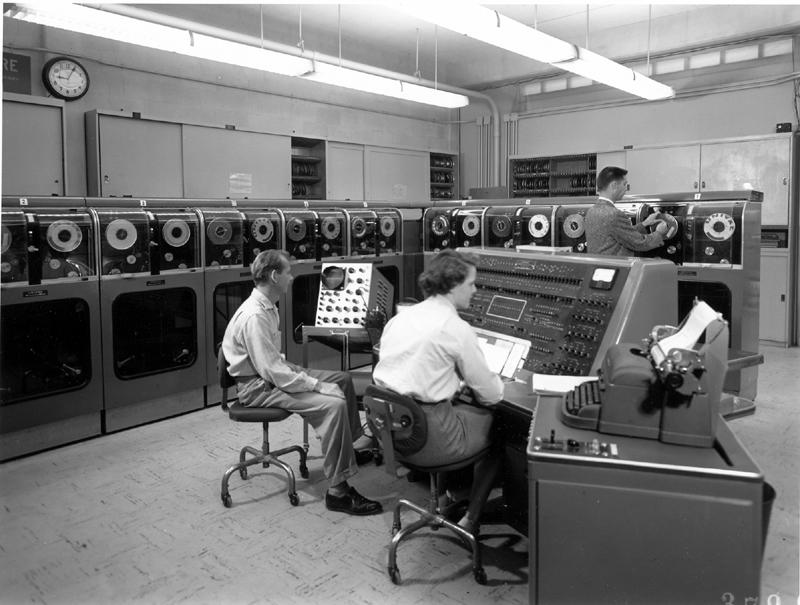

1940
Na década de 1940, os primeiros computadores eletrônicos,
como o ENIAC, eram máquinas enormes que consumiam muita energia
e geravam muito calor. A falta de um sistema operacional como o
que conhecemos hoje foi resultado da novidade da tecnologia.
Os programadores tinham que reconfigurar fisicamente as conexões
entre os componentes para cada nova tarefa.
Esse processo era trabalhoso e pouco prático, limitando a eficiência
e a flexibilidade das máquinas.

1950
A necessidade de automatizar processos empresariais
e científicos levou ao desenvolvimento de sistemas
operacionais para organizar a execução de tarefas.
O UNIVAC I Operating System permitia a organização
de tarefas em lotes, o que aumentava a eficiência
da operação.
Nessa década, os sistemas operacionais
ainda eram primitivos, principalmente focados em
controlar a execução de programas em sequência.

1960
CTSS: O desenvolvimento de sistemas operacionais como
o CTSS foi impulsionado pelo desejo de compartilhar
recursos caros, como processamento e armazenamento,
entre vários usuários.
O CTSS foi pioneiro no conceito
de tempo compartilhado, permitindo a interação simultânea
de múltiplos usuários com um computador.
IBM OS/360: Com a diversificação das aplicações
e a necessidade de lidar com vários modelos de hardware,
a IBM lançou o OS/360 para fornecer uma solução abrangente
que pudesse atender a várias necessidades.

1970
UNIX: O desenvolvimento do UNIX foi influenciado pela
necessidade de um sistema operacional portável que
pudesse ser executado em diferentes máquinas.
Seu projeto modular e aberto permitiu que fosse
amplamente adotado, incluindo em universidades
e centros de pesquisa.
MS-DOS: Com o surgimento dos primeiros
computadores pessoais, como o IBM PC, havia
a necessidade de um sistema operacional simples para
essas máquinas.
O MS-DOS atendeu a essa necessidade,
embora fosse inicialmente uma adaptação do sistema CP/M.
1980
Apple Macintosh System Software: A evolução das interfaces gráficas
de usuário foi impulsionada pela busca de maior acessibilidade e
usabilidade.
A Apple foi pioneira nesse campo com o Macintosh System
Software.
Microsoft Windows: À medida que os computadores pessoais se tornaram
mais poderosos, a demanda por interfaces gráficas e multitarefa aumentou.
O Windows trouxe uma interface mais intuitiva e funcionalidades
multitarefa,
respondendo às necessidades dos usuários.
1990
Windows 95: A busca por uma experiência mais integrada
e amigável para o usuário culminou no lançamento do Windows 95,
que introduziu a barra de tarefas e o botão "Iniciar".
Linux: Com a ascensão da cultura de código aberto,
o Linux surgiu como uma alternativa de sistema operacional
estável e flexível, atraindo desenvolvedores e empresas.

2000
Windows 7 e 8: A Microsoft continuou aprimorando a interface
e a estabilidade do Windows para atender às expectativas dos
usuários.
macOS (OS X): A Apple adotou uma base Unix no OS X para combinar
a interface amigável do Mac com a robustez do Unix.
Linux (continuação): O Linux se expandiu para várias plataformas,
incluindo servidores e dispositivos móveis, aproveitando a
escalabilidade e a personalização que ele oferece.
2010
Windows 10: O Windows 10 buscou unificar a experiência
entre diferentes dispositivos, como PCs, tablets e smartphones.
macOS (continuação): A Apple continuou aprimorando o macOS,
alinhando-o mais aos seus dispositivos móveis.
Linux (continuação): O Linux continuou sua diversificação,
alimentando servidores, smartphones, dispositivos incorporados e muito mais.